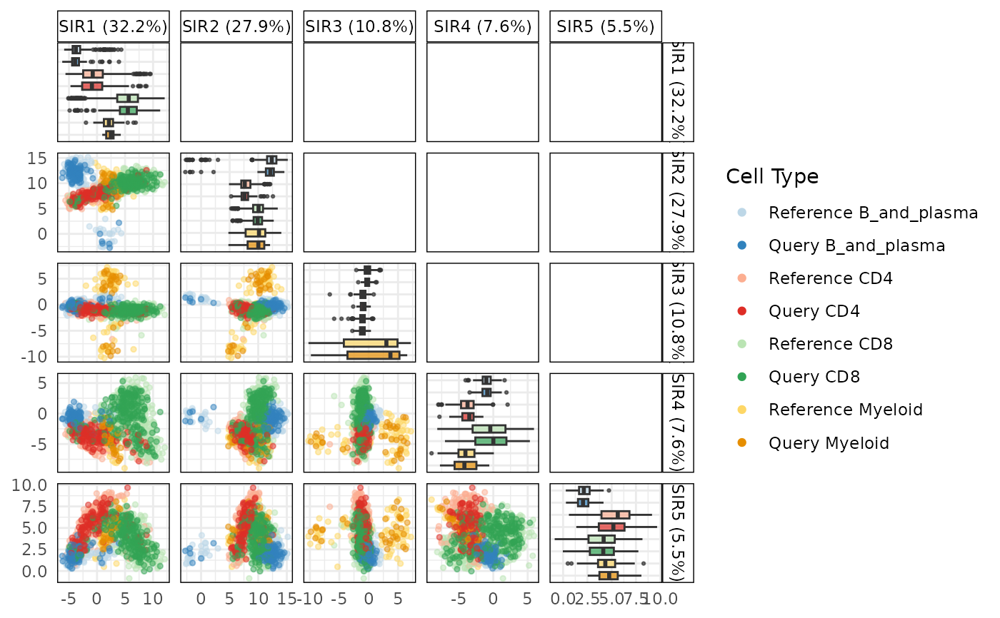

R/calculateSIRSpace.R, R/plot.calculateSIRSpaceObject.R
calculateSIRSpace.RdThis function calculates the SIR space projections for different cell types in the query and reference datasets.
The S3 plot method visualizes the projected reference and query data on discriminant spaces using either a scatterplot, boxplot, or varplot.
calculateSIRSpace(
query_data,
reference_data,
query_cell_type_col,
ref_cell_type_col,
cell_types = NULL,
multiple_cond_means = TRUE,
assay_name = "logcounts",
cumulative_variance_threshold = 0.7,
n_neighbor = 1
)
# S3 method for class 'calculateSIRSpaceObject'
plot(
x,
plot_type = c("scatterplot", "boxplot", "varplot"),
sir_subset = NULL,
n_top_vars = 5,
...
)A SingleCellExperiment object containing the numeric expression matrix for the query cells.
A SingleCellExperiment object containing the numeric expression matrix for the reference cells.
A character string specifying the column name in the colData of query_data that identifies the cell types.
A character string specifying the column name in the colData of reference_data that identifies the cell types.
A character vector specifying the cell types to include in the analysis. If NULL, all common cell types between the query and reference data will be used.
Logical. Whether to compute conditional means for multiple conditions in the reference dataset. Default is TRUE.
A character string specifying the name of the assay on which to perform computations. Default is "logcounts".
A numeric value specifying the cumulative variance threshold for selecting principal components. Default is 0.7.
A numeric value specifying the number of neighbors for computing the SIR space. Default is 1.
An object of class calculateSIRSpace, which contains projected data on the discriminant space.
Each element should include 'ref_proj' and 'query_proj' data frames representing reference and query projections.
A character string indicating the type of plot to generate. Options are "scatterplot", "boxplot", or "varplot". Default is "scatterplot".
A numeric vector specifying which discriminant axes (SIR components) to include in the plot. Default is the first 5 axes.
Number of top contributing variables to display in varplot. Default is 5.
Additional arguments to be passed to the plotting functions.
A list containing the SIR projections, rotation matrix, and percentage of variance explained for the given cell types.
A ggplot object representing the chosen visualization (scatterplot, boxplot, or varplot) of the projected data.
The function projects the query dataset onto the SIR space of the reference dataset based on shared cell types. It computes conditional means for the reference dataset, extracts the SVD components, and performs the projection of both the query and reference data. It uses the `projectSIR` function to perform the actual projection and allows the user to specify particular cell types for analysis.
- **Scatterplot**: Displays projected data points, with colors used to differentiate between cell types and datasets. - **Boxplot**: Shows the distribution of projected data values for each cell type, separated by datasets. - **Varplot**: Highlights the top contributing variables for each discriminant axis, differentiating between positive and negative loadings.
plot.calculateSIRSpaceObject
calculateSIRSpace
# Load data
data("reference_data")
data("query_data")
# Compute important variables for all pairwise cell comparisons
sir_output <- calculateSIRSpace(reference_data = reference_data,
query_data = query_data,
query_cell_type_col = "SingleR_annotation",
ref_cell_type_col = "expert_annotation",
multiple_cond_means = TRUE,
cumulative_variance_threshold = 0.9,
n_neighbor = 1)
# Generate boxplot of SIR projections
plot(sir_output, plot_type = "boxplot", sir_subset = 1:6)
